英国行程及住宿
|
DAY1 |
0711 |
北京-伦敦 |
夜宿伦敦，休息 Hyde Park Suites(海德公园套房酒店) 55 Inverness Terrace, 威斯敏斯特, London, W2 3JN (电话: +442077278916) |
|
DAY2 |
0712 |
肯辛顿公园 海德公园 白金汉宫 特拉法加广场 国家画廊 |
11:30 白金汉宫换岗仪式 传说中梁朝伟喂鸽子的地方 |
|
DAY3 |
0713 |
解说器3.5磅 |
|
|
DAY4 |
0714 |
威斯敏斯特教堂 泰晤士河巡游 Tower of London 伦敦塔 伦敦塔桥 |
票价：成人18镑有免费的中文语音解说器,皇家有重大活动常来这里,里面很大,全是名人的墓,最好读一下英国历史能感受的更好. 教堂的偏花园中有厕所 凭pass card免费 凭pass card免费 伦敦塔票价22磅，预计2个小时， 凭pass card免费 伦敦塔桥博物馆 8磅/人 Tower Bridge Exhibition（SE1 2UP），门票Adult 9镑，Students with identification 6.30镑，凭pass card免费 |
|
DAY5 |
0715 |
温莎城堡 伊顿公学 |
成人18.5镑 |
|
DAY6 |
0716 |
伦敦-牛津 比斯特购物村 |
火车：从伦敦帕丁顿火车站(London Paddington)出发， 1小时左右，到达牛津车站(Oxford，OXF) www.nationalrail.co.uk |
|
DAY7 |
0717 |
伦敦-巴斯BATH |
上午巨石阵，下午 罗马浴池博物馆 14磅 /人 巴斯修道院 皇家新月 圆形建筑 Redcar Hotel（雷德卡酒店）27-29 Henrietta Street Bath, BA2 6LR, 英国 +441225 469151 0718-0719 2人间£70，3人间£95 |
|
DAY8 |
0718 |
巴斯-COTSWORLDS科茨沃尔茨 |
科茨沃尔茨，被英国誉为英国的“浪漫之路”，位于伦敦西面，是一条蜿蜒于科茨沃尔德丘陵地带（Cotswold Hills）的长达120 公里的环形旅游线路。 Premier Inn Cheltenham North West(切尔滕纳姆北西普瑞米尔客栈) Tewkesbury Road, Uckington, 切尔滕纳姆, GL51 9SL (电话: +448715278226) 2人间£61.75 3人间£70.50 |
|
DAY9 |
0719 |
切尔滕纳姆-湖区 |
Lonsdale House(朗斯代尔之家酒店) Lake Road, 鲍内斯温德米尔, LA23 2JJ (电话: +441539443348) 2间双人间£203 /2晚，三人住加早餐£7 /晚 |
|
DAY10 |
0720 |
湖区 |
|
|
DAY11 |
0721 |
湖区-爱丁堡 |
住宿：Macdonald Holyrood Hotel 两天 |
|
DAY12 |
0722 |
爱丁堡 |
沿Royal Mile(皇家英里大道)由西向东，依次是： Edinburgh Castle爱丁堡城堡 门票：成人(16-59岁)16镑，儿童(5-15岁)9.6镑 St.Giles Cathedral圣吉尔斯大教堂 （始建于12世纪，作为爱丁堡的宗教枢纽已经900年历史）、 Palace of Holyroodhouse荷里路德宫 （英国女王在苏格兰的官邸） Calton Hill卡尔顿山 爱丁堡的制高点和观景区域，可以爬上山顶看爱丁堡全景，全程45分钟到山顶 Scottish National Gallery苏格兰国家美术馆（1859年落成开馆，集合了文艺复兴时期至19世纪末一系列优秀的欧洲艺术品，包括提香、梵高、拉斐尔和莫奈等名家之作，同时也囊括了大量苏格兰艺术精品，是苏格兰顶尖的美术馆） Museum of Scotland苏格兰皇家博物馆 （博物馆的藏品从恐龙化石到国际象棋，从木乃伊到汽车，探索了苏格兰乃至世界自然、文化、工业、科学和设计的多样性，每一层等待你发现的都是一个截然不同的创造性世界） The Elephant House大象咖啡馆（地址：21 George IV Bridge，Edinburgh EH1 1EN，Scotland，写作《哈利波特之地》） Princes Street Gardens王子大街花园 （是爱丁堡老城和新城的分界，也是苏格兰最著名的园林景观之一） Greyfriars Kirk葛莱菲教堂 一座被公墓包围的17世纪时期的教堂（有电影《忠犬八公》的故事原型） |
|
DAY13 |
0723 |
爱丁堡-约克 |
英国最大的哥特式教堂-约克大教堂、Ouse运河及古代城墙，游览极具特色的英国古代商业街。 ibis budget Leeds Centre(利兹中心宜必思快捷酒店) 2 Gateway North, Crown Point Road, 利兹, LS9 8BZ (电话: +441132450725) 2人间£30，三人间£35 |
|
DAY14 |
0724 |
约克-剑桥-伦敦 |
住宿：The Royal Foundation of St Katharine(圣凯瑟琳皇家基金会酒店) 地址：2 Butcher Row, 伦敦, E14 8DS； 3间0724-0726，1间0724-0725 |
|
DAY15 |
0725 |
圣保罗大教堂 牛津街购物 |
|
|
DAY16 |
0726 |
格林威治天文台 伦敦-北京 |
第一天：初到伦敦。
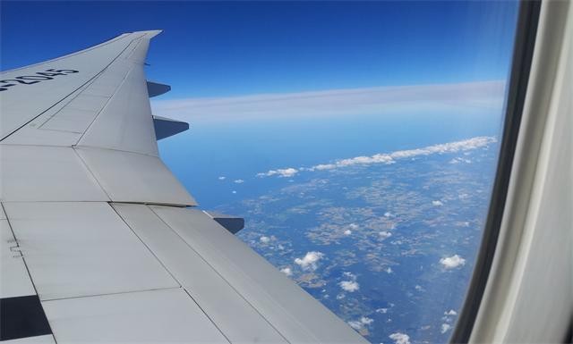
飞机上的美景已然令人心动
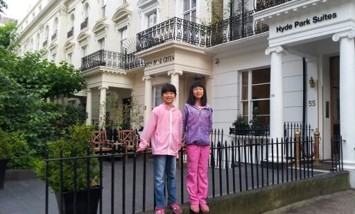
我们住的酒店，130英镑/晚，不含早，房间小，住的真心肉痛，不过位置无敌，离肯辛顿公园超近，可以每天去遛弯。有厨房，话说这两天我和袁臻大展厨艺，烤披萨、烤鸡翅、烤地瓜、做意大利面，不过都是用的半成品呵呵……
第二天：有时差，早上三点就醒了，倍儿清醒。早点起来做早餐，烤披萨。伦敦物价很贵，在外面吃饭的话，每个人怎么也得人民币80左右吧（点的很节省很简单的情况下）。所以这几天早餐、晚餐基本自己厨房解决。第一次用烤箱，开始很成功，但是在烤了一次鸡翅之后，每次再用就烟雾缭绕，一屋子呛人的味道。
今天的游览路线：早上步行穿过肯辛顿公园和海德公园，观看白金汉宫换岗仪式，步行至特拉法加广场，参观国家画廊，观伦敦街景。因为还在倒时差，安排的很宽松，让大家有时间休息。特别是郭嘉同志，居然在这天开始发烧，所以让他中午就早早回家休息。一幕有趣的插曲：回去的路上，他要上厕所，50pence，可是身上只有信用卡呀。他于是问路人要了50pence，居然要到了。
午餐吃的麦当劳，话说国外的汉堡牛肉饼的味道真的和中国不一样。
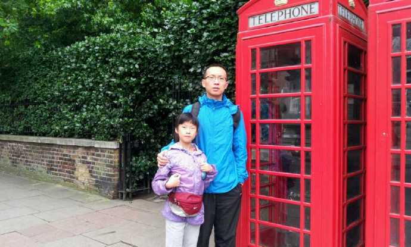
肯辛顿公园入口，离我们的住处非常近
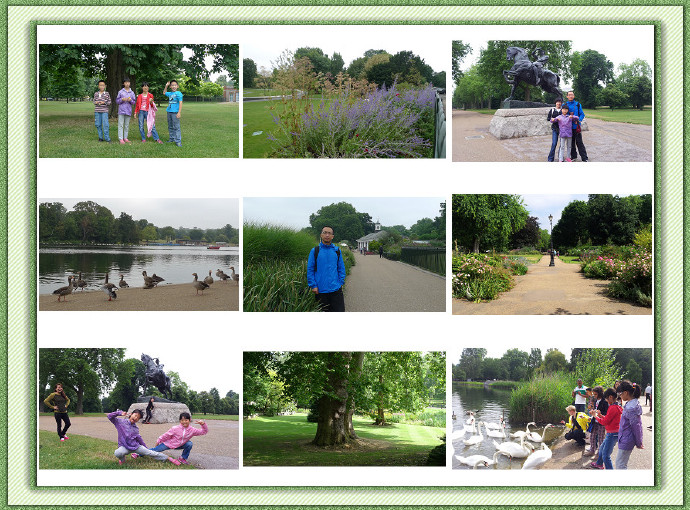
海德公园，各种美。据说很多离开伦敦的人最难舍的就是海德公园
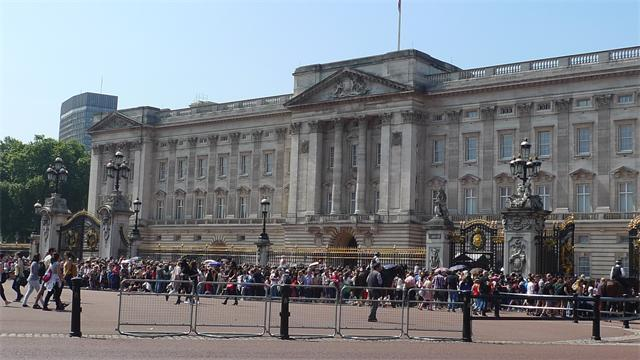
离换岗时间还有半小时，可是白金汉宫早就被围得水泄不通，根本挤不进去
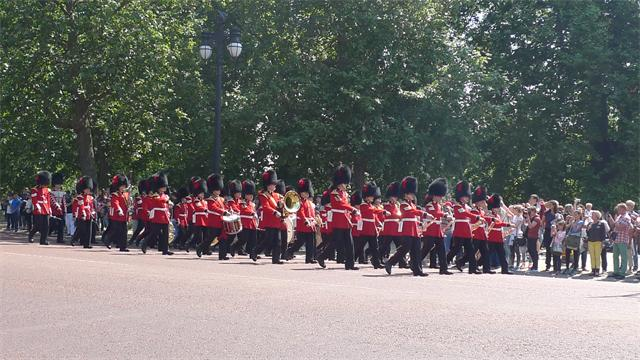
我们这些挤在外围的人只能看到这些士兵很拉风的绕场一周，然后进到白金汉宫大门里，之后就不知道了
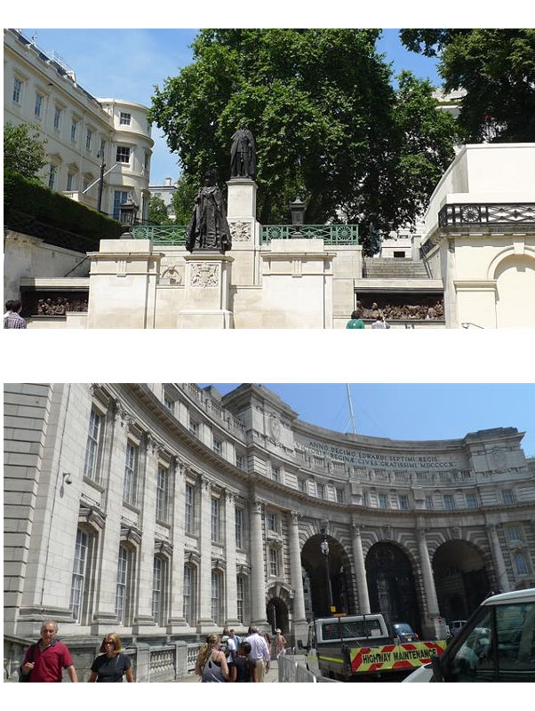
通往特拉法加广场的路上
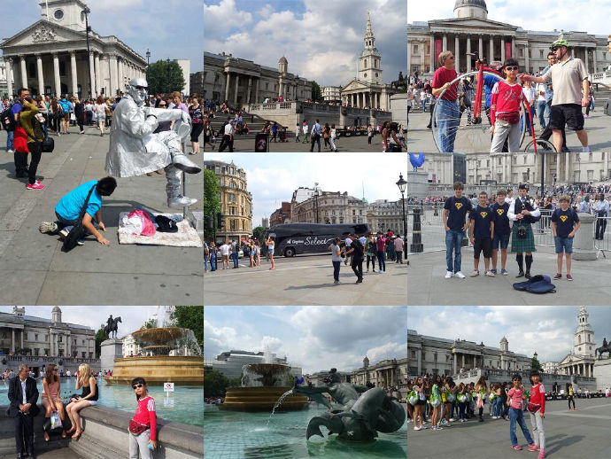
热闹的特拉法加广场，传说中梁朝伟喂鸽子的地方
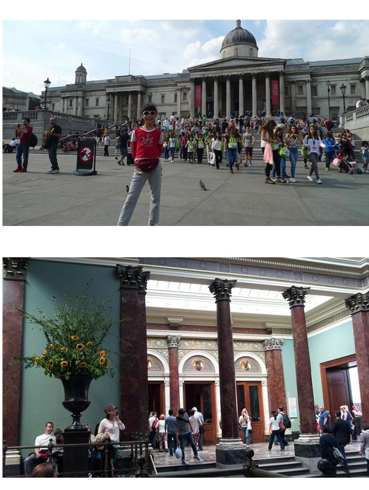
气势宏伟的国家画廊，可惜我们不懂艺术
第三天：大英博物馆。慕名而来，泡了一整天，仍是觉得未过足眼瘾，孩子们上午基本上还是热情高涨，下午就失去了兴趣，威逼利诱下才走了一圈。希望她们以后能体会到这一天的参观是一笔多么宝贵的精神财富。
中午在大英博物馆附近品尝了英国著名的Fish&Chips。点了三个品种的Fish&Chips，传统风味的鳕鱼，还有鱿鱼和三文鱼，炸的鱼配上薯条或者土豆泥，每份8个磅。这就是英国最传统最拿得出手最著名的食品了，真是名符其实的“暗黑料理”的国度呀。
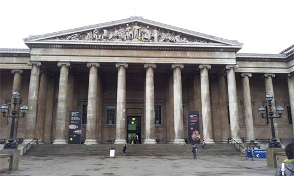
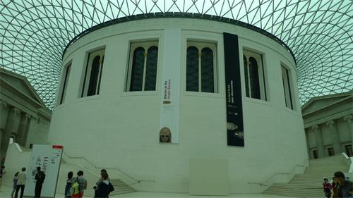
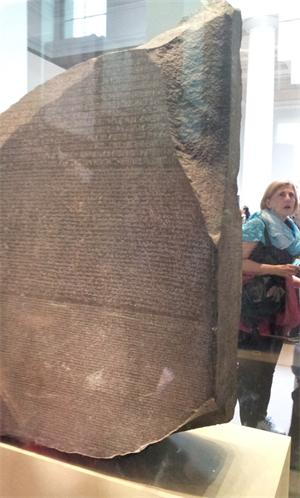
著名的罗塞塔石碑
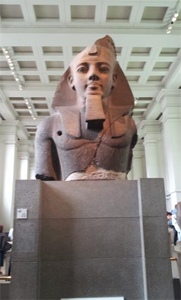
拉姆西斯二世雕像
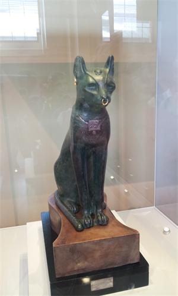
埃及墓葬中的青铜猫
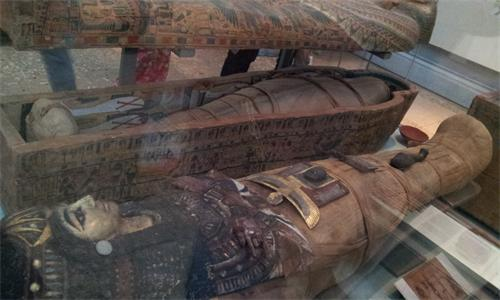
一屋子各色木乃伊，这里的木乃伊估计比埃及的还多。虽然人来人往十分热闹，仔细凝视木乃伊的时候还是觉得有点瘆的慌，也许是听多了关于木乃伊的诅咒吧
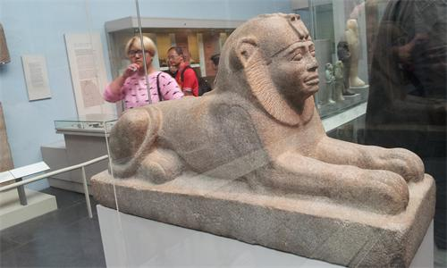
小号的狮身人面像
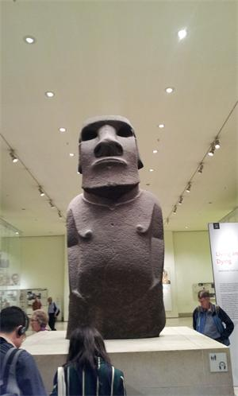
复活节岛石像
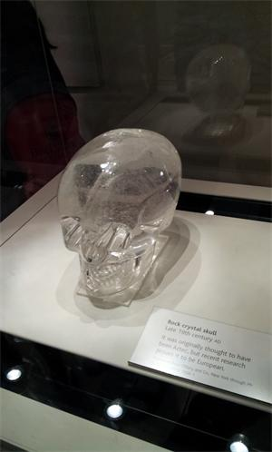
水晶头骨，博物馆作为古董购进，经过现代科学仪器的鉴定，其实制作于近代
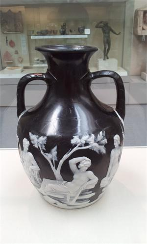
古罗马的花瓶，曾经摔碎成两百多片，后被修复
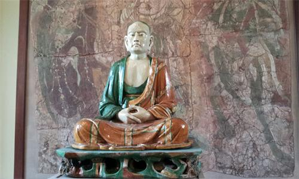
唐三彩
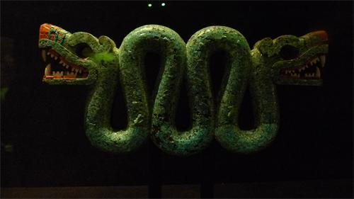
双头蛇
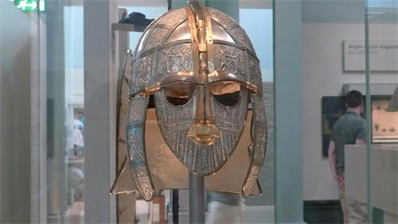
萨顿胡船葬的头盔
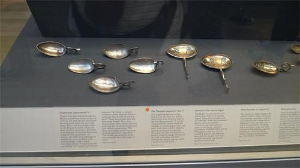
霍克森胡椒粉盒
第四天：今天买了一天的London Pass，所以计划是去London Pass上的西敏寺、泰晤士河巡游、伦敦塔、伦敦塔桥展览、伦敦桥地牢体验，要是这些地方能游览到还是很值的。可是最后只游览了西敏寺、泰晤士河巡游、伦敦塔，就已经没有时间了。总结经验就是像我们这样拖家带口喜欢慢慢游览的，要不然就买三天的London Pass，要不然就不用买了，基本没省什么钱，还弄得我们一直想赶时间。不过London Pass在西敏寺还是可以省去排那个长蛇一样的队伍。
今天的午餐为了省时间，在西敏寺门口一人一个5磅的热狗，配芥末酱和番茄酱，也还可口。
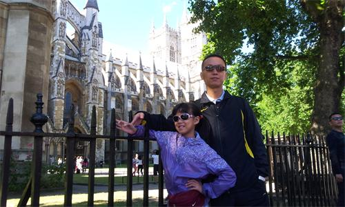
威斯敏斯特教堂，皇家气派，有牛顿等很多名人的墓
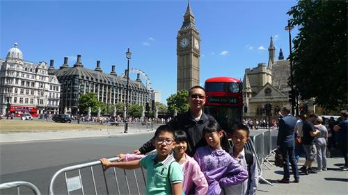
大本钟
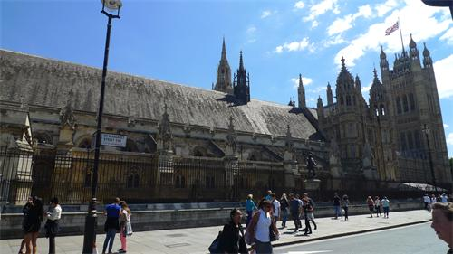
国会大厦
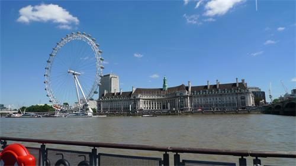
河对岸看伦敦眼
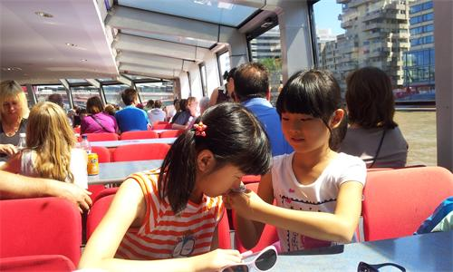
泰晤士河游船
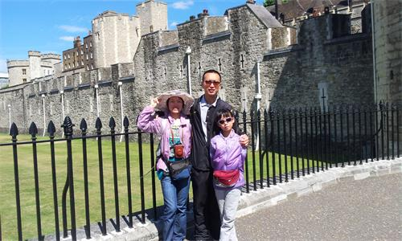
伦敦塔，其实长久以来被作为皇家监狱，血腥玛丽、伊丽莎白一世都曾被囚禁于此
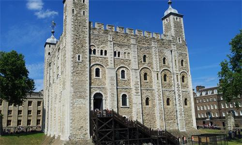
伦敦塔中心的高塔，一楼没有门，他们以为撤掉梯子敌人就进不来了……
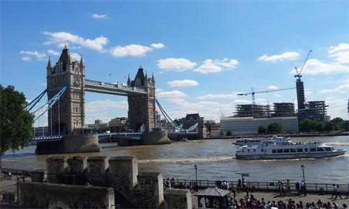
从伦敦塔远观塔桥
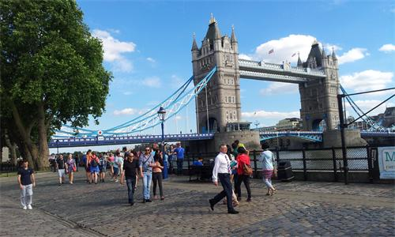
伦敦塔桥
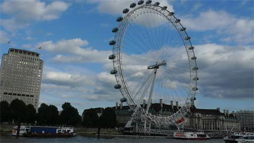
伦敦眼
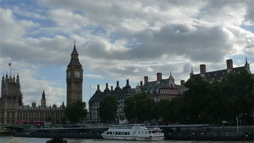
从游船上看大本钟和议会大厦
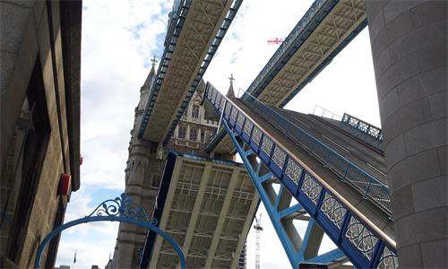
正好碰到有大船经过，塔桥的桥板从中间分开升起
第五天：温莎城堡。绝对值得去的地方，皇家现在还在使用的城堡，各种气派。曼曼前两天看到白金汉宫时，因为不让进去参观，说女王怎么住在这么破的地方。逛完温莎城堡，她觉得完全够得上皇家的规格了。
温莎小镇也很值得一逛，恬静美好的生活。伊顿公学也在小镇里，但是不对外开放。在寻访伊顿公学的路上，碰到一位女士带着几个女儿去打网球，她向我们介绍说其实伊顿公学不是一所封闭的学校，我们沿途经过的许多楼房、草地、教堂其实都是属于伊顿公学的，可能是宿舍、球场、学院。不愧是最有名的贵族学校，不是一般的牛。我向往的说，如果做一名伊顿公学的老师或者家属，真是我梦想中的生活呢。郭嘉想了想说，那你唯一的办法就是改嫁了
离伦敦只有半个小时的火车，但是温莎的物价已经比伦敦低很多。中午在西餐厅吃了意面、披萨、三明治，5个人才20磅，超值了。
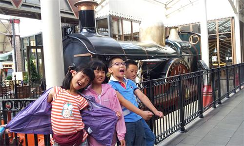
温莎火车站
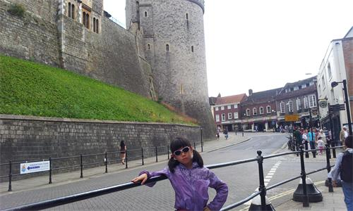
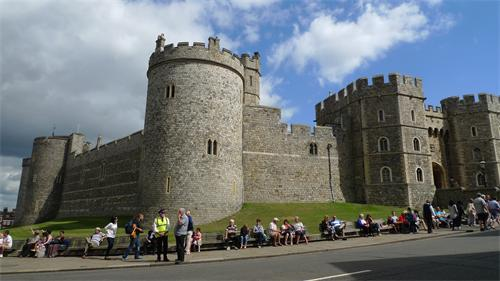
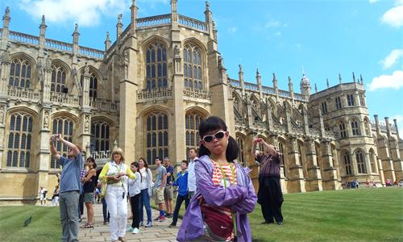
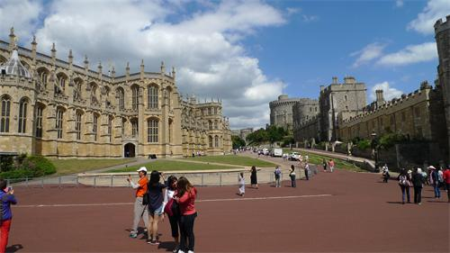
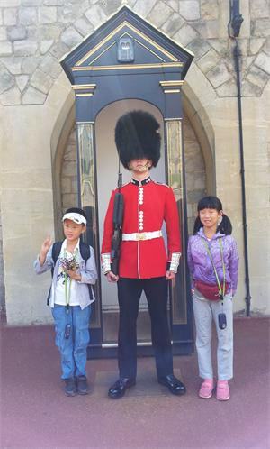
温莎城堡
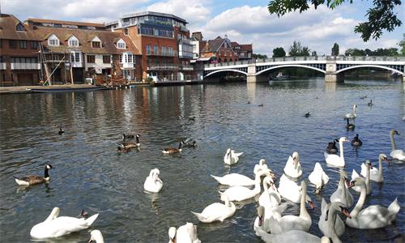
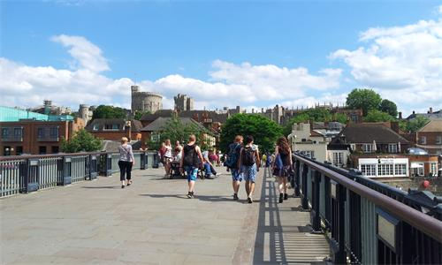
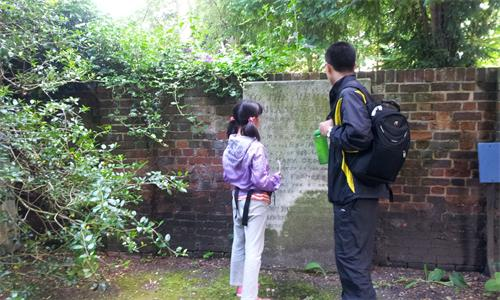
小镇掠影
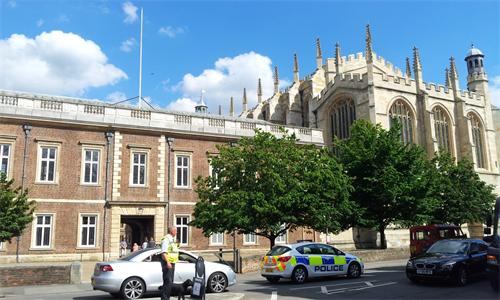
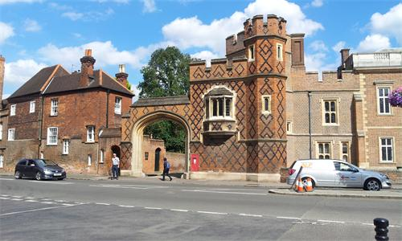
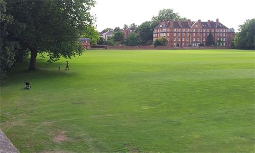
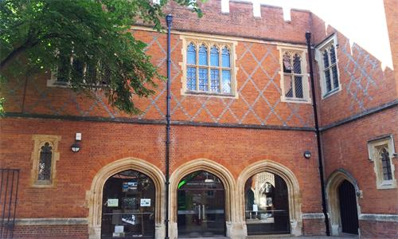
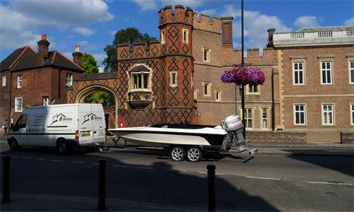
伊顿公学
第六天：牛津。先坐牛津城市观光巴士绕了一大圈，了解一下牛津全貌；然后逛了基督国王学院等几个重点的学院。下午赶往比斯特购物村，shopping。
午餐又是汉堡，Burgur
King。我已经有点受不了了。但是郭嘉同志认为到了西方就要入乡随俗，坚决反对吃中餐、日餐、韩餐。只好继续西餐，可是这个西餐的可口程度太有限了，说实话比国内的必胜客差太多了……
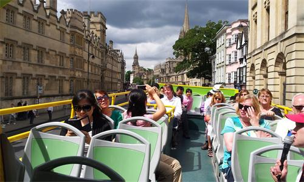
牛津的城市观光巴士，一天内随时乘坐，车上有中文解说
大名鼎鼎的基督国王学院的正门，游客不让进的。郭嘉说从正门看过去的草地他在哈利波特里见过
从基督国王学院对游客开放的门进去，哇塞，绝对的明信片风景
步步都是景
各种摆Pose
逛牛津城市就是在牛津的各个学院中漫步
好像是个剧院
图书馆，据说很有名
叹息桥，说是把威尼斯的一座桥搬到了牛津
忘了什么学院了，围墙的柱子上都是雕像，但是没有人知道雕的是谁
著名的Blackwell书店，街上一个不起眼的门面，也就是两扇窗户的宽度，进去之后发现里面有4层，每层都挺大的，据说书店里书架的长度达到4公里
Blackwell书店的地下一层
第七天：今天开始离开伦敦租车行，15座的车，带司机。今天游览索尔兹伯里巨石阵，巴斯。巴斯的浴室博物馆还是有些看头的，原来以为只是古罗马人的浴室文化，其实是一个类似古希腊神庙的所在。博物馆会给小朋友发一些问卷，上面有一些有趣的题目，小朋友可以根据参观的内容把贴画贴到对应的地方，目的就在提高小朋友游览的兴趣吧。赞一个。国内的博物馆和各种展览也应该在这方面下点功夫哦。
晚餐看到一家颇受好评的Fish&Chips，这家便宜而且量大，但是吃到后来大家都觉得有些腻了，炸鱼和炸薯条真不能吃多了。
索尔兹伯里，神秘的史前巨石阵
巴斯的一座廊桥，在桥上走以为是普通的街道，两边都是店铺，下了楼梯才发现是架在水上的石桥。
美丽的巴斯街景
有名的巴斯面包店，已经开了几百年了
浴室博物馆
傲慢与偏见的作者简奥斯汀的住所
新月楼。巴斯整个城市的布局出自一对父子的设计，主要由太阳广场和新月楼的日月组合构成
第八天：cotswolds，这个地区由很多小镇构成，是英国田园风光的代表。我们去了两个小镇，水上波顿和ChippingCampden。小镇的房子都由此地区特有的蜂蜜色石头垒成，好似带着岁月斑驳的痕迹；在家家户户鲜花绿树的掩映下，说不出的恬静与和谐。
夜宿切尔滕纳姆的Premier酒店，三人间70磅，含早餐，感觉物价比伦敦一下就降下来了。今早在巴斯第一次品尝了full English英式早餐，包括煎蛋、香肠、培根、豆子和烤蘑菇，每份7磅左右，还是很有英国特色的。之后每天的早餐基本上就都是Full English了，热量很高，造成曼曼回国后总说想起英国早餐就恶心。晚餐在这家Premier吃了牛排，太太太……难吃了。
水上波顿，一条浅浅的小溪从镇中穿过，水很清，很多野鸭在小溪中戏水
水其实特冰，孩子们一次一次跳进去，终于适应了，说脚都木了
每家都是花园
很多英国人周末也会到这里来休闲，在水边铺上地垫，孩子就在水里玩耍
ChippingCampden的房子颜色似乎比水上波顿的更黄一些
这里曾经是羊毛交易的中心，孩子们玩耍的地方就是曾经的集市
古朴的街道
英国很多地方有这样的纪念碑，摆着罂粟花圈，一看就是对战争中死难之人的缅怀
第九天：开始下大雨了，好在我们在车里，赶往湖区的路上。人品爆发了，英国这么多天，基本都是天晴，就今天赶路碰上大雨了。下午到达温德米尔，入住Bowness小镇的朗斯代尔之家酒店。很温馨的一个小酒店，应该也是一家民宿改成的，总共三层楼，11间客房，地下一层是前台和餐厅。我们三人入住两晚共203磅，孩子每天加7磅的早餐费。
温德米尔是湖区内最热闹的一个湖，很多俱乐部在湖上开展水上运动项目。英国人周末也会来此度假，做一些户外运动，因此这里遍布着卖户外、登山、自行车等各种品牌运动服饰装备的店铺。
离酒店不远有家卖汉堡、披萨、土耳其烤串的小店，很多人在店里加外卖，味道很不错。湖区两天的晚餐都是在此解决。
酒店的每个房间布置成不同的特色，我们住的一间是欧式的，床的四周垂着白色的帐幔，在孩子中赢得超高人气，被评价成“这是国王和公主的房间”
在旅馆安顿好之后，步行不远就是热闹的Bowness码头，湖边很多天鹅。据说曾经有中国留学生把天鹅逮回去吃掉，但是每只天鹅身上都有芯片，于是被警察追踪到。也不知是不是真的，太给中国人丢脸了。
波光粼粼的温德米尔湖
很多人在湖上做帆船、皮划艇等水上运动
有很多坐船游览温德米尔湖的航线，我们选择了红线，停靠两个码头，Stockhole和Ambleside
小雨中游Stockhole，感觉像个小岛，很安静，没什么人
岛上有个游乐园，人很少，地上铺着厚厚的碎木屑，一股木头的清香。孩子们流连忘返
从Stockhole码头继续坐船，来到离Ambleside镇很近的一个码头，朝着Ambleside的方向步行。一路各种美景
Ambleside小镇的房子基本都是用石头垒成，自然纯朴，家家都像花园
因为担心误了码头的最后一班船，我们在看到Ambleside镇中心的教堂尖顶之后开始返回，没有继续往镇中心走。码头的景色也很美丽。
第十天：还是湖区。早上司机带我们到一个湖边（记不清名字了，乌斯湖？），湖边有气派的旅馆和宽广美丽的草坪。孩子们在这里捉迷藏、打水漂、老鹰抓小鸡、杀人游戏。之后Ambleside和Bowness小镇游览+购物。这里的户外运动装备多、全、便宜，所以大家都增加了不少装备。晚上在Bowness码头边的草地休息，碰到两个英国小男孩，兄弟俩，在踢足球。于是几个小朋友加入战局，踢到一起，不过技术实在差的太远，只有帮人捡球的份……
湖边小憩
湖边草地上偶遇一场婚礼，于是我们全程见证了感动、泪水与誓言
Bowness小镇风光
Ambleside小镇风光
和英国小朋友一起踢足球
第十一天：湖区——爱丁堡。在爱丁堡入住的是一家四星级酒店，145磅/晚，位置和周围环境都超级赞，就在Holyrood宫附近，紧邻着议会大厦和王子山。我们说了好几次要带孩子去爬爬王子山，可惜每天回来都累了，未能成行。今天的行程就是卡尔顿山观爱丁堡全景，以及爱丁堡城堡。
卡尔顿山顶风光，从这里可以看到爱丁堡市的全景
偶遇一场加上新郎新娘只有六个人的小型婚礼
爱丁堡城堡，三面悬崖，一面临海，气势宏伟，险峻异常
爱丁堡城堡风光
大象咖啡馆，据说哈利波特的作者经常在这里写作，也就是在这里诞生了这部小说
一英里大道，这个教堂的顶部是一个皇冠的形状
一英里大道晚上九点还热闹非凡，有各种艺人在讨生活
这个画喷绘的画家很神奇，绘画方法也很独特
一个来自美国密西西比的脱口秀艺人在表演铁链逃脱
荷里路德宫，没有对外开放
就在我们酒店旁边的议会大厦，很现代的风格
酒店门口的公园、绿地以及王子山
第十二天：还在苏格兰。上午先去高地南端游览苏格兰最大的湖泊——罗蒙湖。由于这次没有时间游览苏格兰高地，所以去一下这个最近的湖泊，也算是到过高地了。下午本来计划去格拉斯哥的，但是大家都觉得爱丁堡还意犹未尽，所以下午仍回爱丁堡继续逛。
罗蒙湖，到此一游
苏格兰国家博物馆
忠犬八公的墓。这只在主人死后为主人守墓十四年的小狗，至今仍令世人感动。还有一部以此为题的电影
教堂门口的咖啡馆也以此为卖点，到处都是小狗的介绍以及雕像，引来不少游人
王子街花园，经典的背景
王子街花园的绿地，右面的建筑就是苏格兰国家美术馆，据说里面有很多名画，可惜没有时间游览了
第十三天：开始从爱丁堡返程，途经约克。约克是个有历史的地方，有宏伟的教堂，也有魅力的街景、繁华的街道。时间有限，在这个物价不高的城市，大家不约而同的选择了逛街购物。约克很多夏季商品都有不小的折扣，衣服的样式看着很别致，价格也很亲民，所以大家都收获颇丰。谁让旅游的主力是四个妈妈呢。
约克教堂的外景和内景，气势宏伟，据说比西敏寺规模更大。但是我们对教堂已经审美疲劳了，只在门口留影就逛街去了
约克的街道逛起来很有意思，又漂亮，又有很多吸引人的商品
每天七点半，对鬼故事感兴趣的人可以在这里集合去探访游荡在约克郡的鬼魂
晚上住在利兹的ibis，连锁的旅馆，小房间很干净舒适，三人间加早餐才45英镑，性价比实在太高了。旅馆旁边的一家在tripAdvisor上评价很高的土耳其餐厅超级推荐，点了炖羊肉配米饭，羊肉里配着一种不知名的小瓜，味道太赞了
第十四天：剑桥游览，晚上回到伦敦。
女王学院
数学桥，据说最初是由一名数学家建造，没用一颗钉子，后来被人拆开之后重装，再也装不回去了
忘了什么学院，好像和宗教有关的，在门口看去景色很漂亮，不让进，要收费。剑桥的学院基本都要收费的
徐志摩就读的国王学院
还是国王学院
牛顿所在的三一学院，大门上亨利八世雕像的右手中，权杖已经被一个调皮的学生换成了椅子腿
身后的小苹果树，就是牛顿被苹果砸到脑袋并发现了万有引力的地方。不过，此树已经非彼树了。这棵树据说是从牛顿的家乡移植过来的。
不知道什么学院
这就是徐志摩诗中的康河了。康河上很多桥，康桥其实就是其中一座普通的石桥
从康河中看到的国王学院
撑一支长篙，向青草更青处漫溯，满载一船星辉，在星辉斑斓里放歌
第十五天：圣保罗大教堂，千禧桥，泰特美术馆。其实今天主要的目的是逛街，可惜最让我们失望的也是伦敦的商业街，还没到打折季，什么折扣都没有，死贵，什么收获都没有。
看到的第一眼就会注意到，圣保罗大教堂的建筑风格与西敏寺完全不同，就是巴洛克式和哥特式的区别
千禧桥
回到伦敦后住在东一区和二区交界的一个教会酒店，超级推荐，酒店才85磅/天，环境和服务都很好，有一个大草坪，给孩子们带来很多欢乐。而且离DLR城铁站超近，交通也很方便
第十六天：在英国的最后一天了，因为是晚上8点的飞机，所以上午去了格林威治。也是很值得一去的地方哦。
格林威治地方不大，可以乘DLR城铁或者坐船到Greenwich码头。老远就能看见这艘巨船Cutty
Sark，城铁站也是以此为名的，还可以买票进去参观。
格林威治公园的山脚下是老皇家海军学院，这里是伊丽莎白一世出生的地方
海事博物馆
天文台在格林威治公园的小山顶上。探访天文台的路上，到处都是大片的绿地和宏伟而古老的建筑
从栏杆外拍的天文台，那个红球是航行的海员用来看时间的。进去需要另外买票
这就是世界闻名的格林威治时间
零度经度线。曼曼终于实现了她的小小夙愿，站在子午线上，横跨东西两个半球，愉快的结束了此次英伦之旅